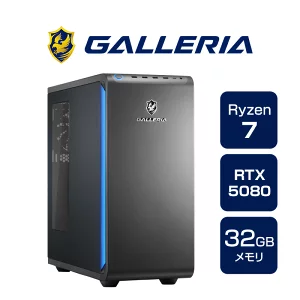

APEX Legendsを快適に、かつ高いFPSで安定してプレイしたいと考えている方に向けて、今本当におすすめできるゲーミングPCを2台厳選しました！競技シーンのような滑らかな映像で勝ちにいきたい方はぜひ参考にしてください。
1秒間に画面が何回書き換わるかを示す数値。値が高いほどキャラの動きがヌルヌルと滑らかに見え、敵にエイムを合わせやすくなります。200FPS以上出せると非常に有利です。
現在もっとも一般的な画面の解像度（画質）。PCへの負荷が比較的低いため、画質を維持しつつ高いFPSを最優先で出したいときに向いています。
フルHDの4倍の画素数を持つ、圧倒的に高精細で美しい映像解像度。ゲームの世界への没入感は凄まじいですが、PCには最上級の処理性能が求められます。
PCが一時的にデータを処理する作業机のようなスペース。16GBでもゲームは動きますが、32GBあるとゲームをしながらの配信や動画編集が圧倒的に快適になります。
PCの頭脳であるCPUの限界性能をさらに引き上げることができるパーツのこと。処理能力を高めて、FPSを一挙に向上させることが可能です。

どちらを選ぶべきかの基準は非常にシンプルです！
もし上記の条件に、ひとつでも「YES」と当てはまる項目があるなら、間違いなく2つ目の最強ハイエンドモデルを強くおすすめします！投資する価値のある圧倒的な体験が待っています。
逆に、「4Kや配信にはこだわらない」「フルHD環境でしっかり高いFPS（200FPS以上）が出て、快適にランクマッチを楽しめれば満足！」という方であれば、コストパフォーマンスに優れた1つ目のスタンダードモデルで全く問題ありません。